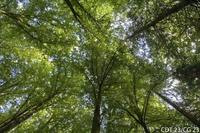

250 000 hectares de forets tropicales disparaissent chaque semaine !!!
|  | Maillons essentiels de la chaîne de la vie, les forêts jouent un rôle crucial dans le cycle de l'eau et la régulation des climats. Elles comptent parmi les écosystèmes les plus riches et les plus utiles de la planète, abritant plus de 50 % de la biodiversité terrestre. Pourtant, leur dégradation se poursuit à un rythme effréné. Chaque semaine, c’est près de 250 000 hectares de forêts tropicales qui se volatilisent. Or, on estime que 20% des gaz à effet de serre émis dans l’atmosphère proviennent de la déforestation. Et c’est à une exploitation forestière peu respectueuse de la nature et de l’homme, souvent illégale, ainsi qu’à des coupes sauvages pour installer des plantations industrielles, telles que le palmier à huile et le soja, qu’il faut imputer l’hémorragie des forêts et des milliers d’espèces qu’elles hébergent. |
Si en France les forêts augmentent en surface depuis la fin du 19ème siècle, à l’heure actuelle, seul 1% de ces écosystèmes est suffisamment protégé au nom de l’inestimable biodiversité qu’il abrite. En métropole française, plus de 200 espèces forestières sont menacées de disparition ou fortement fragilisées. Une situation préoccupante qui s’explique par l’application obstinée d’un modèle de gestion ayant tendance à uniformiser les milieux au détriment de la variété faunistique et floristique... Par ailleurs, les besoins croissants de l'homme vis-à-vis de produits en bois papier, mais aussi en produits contenant de l’huile de palme ou en viandes nourries au soja, lorsqu’ils n’ont pas de garanties environnementales, contribuent également à la disparition accélérée de la biodiversité et à la déstabilisation du climat.
Pour enrayer ce processus de dégradation et redonner toute sa place à la forêt, le WWF-France développe des actions dans des écorégions prioritaires.